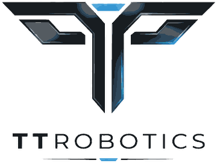

Bidik, çocukların problemi adımlara bölmesini, örüntü bulmasını, kural yazmasını ve hatasını kendisi bulmasını oyunla öğretir. Akıllı tahtada, tablette ve bilgisayarda kurulum gerektirmeden açılır.
Her beceri oyunda ayrı bir bölüm grubuyla açılır. Öğretmen panelinde her öğrencinin hangi beceride ne kadar ilerlediği görünür.
Komutları doğru sıraya dizmek, bir yolu adım adım planlamak.
İlk adımlarTekrar eden hareketi fark edip döngüyle kısaltmak.
DöngülerTekrar eden bir parçayı fonksiyona koyup yeniden kullanmak.
Fonksiyonlar“Eğer önü kapalıysa sağa dön” gibi duruma göre karar veren kurallar yazmak.
KoşullarBüyük problemi altın, anahtar, kapı gibi küçük hedeflere bölmek.
Yol KurProgramı adım adım çalıştırıp hatanın nerede başladığını bulmak.
Hata avcısı görevleriBidik'in kasabasında sürdürülebilir kalkınma amaçlarıyla ilgili yedi sorun var. Çocuk her sorunu aynı oyun diliyle (İleri, Geri, Sola dön, Sağa dön) kodlayarak çözer; çözülen bölge haritada iyileşir. Bilgi işlemsel düşünmenin her boyutu bir oyun mekaniğinde yaşanır.
Okula ve parka güvenli yol yok. Ayrıştırma: büyük yolu küçük hedeflere bölerek kur.
B1 · SKA 11 · 9 · Yol KurGölet kirlenmiş. Algoritma: Bidik'i adım adım kodla.
B4 · SKA 6 · 14 · Kodla SürArılar polen bulamıyor. Örüntü: tekrar eden adımları döngüyle kısalt.
B2 · SKA 15 · 2 · DöngülerAğaçlar kesilmiş. Soyutlama: tekrar eden parçaya ad ver, fonksiyonla kullan.
B3 · SKA 13 · 15 · Kalem Bidik, FonksiyonlarÇöpler karışık. Koşul: “eğer… ise…” kuralıyla karar ver.
B5 · SKA 12 · KoşullarEnerji boşa gidiyor. Verimli algoritma: en kısa program, en az enerji.
B4 · SKA 7 · 13 · Usta bölümlerSulama programı bozuk. Hata ayıklama: hatanın nerede başladığını bul ve düzelt.
B6 · SKA 6 · 2 · Hata AvcısıFinal: Kasaba Meydanı. Bütün sorunlar çözülünce dostlar şenlikte buluşur (SKA 17: Amaçlar için ortaklıklar). Okul öncesinden 4. sınıfa kadar seviye seçilir; her seviyede yalnızca o yaşa uygun bölümler açılır.
Ayrıntılı ders akışı, kavram tablosu ve sorulacak sorular öğretmen rehberinde. Ekransız oynamak için yazdırılabilir masa başı kartlarını, hazır ders planı ve çalışma yaprakları için Öğretmen Odasını kullanın.
Bir öğrenci “Bidik” olur, sınıf ona “ileri, sağa dön” komutları verir.
Akıllı tahtada bir bölümü sınıfça çözün. Çalıştırmadan önce tahmin isteyin.
Öğrenciler ikişer ikişer oynar: biri planlar, diğeri bloğu koyar, sonra yer değiştirir.
“Hatanı nasıl buldun?” sorusuyla kapanış. En kısa programı yazan grubu tahtaya davet edin.
Etkileşimli tahtanın tarayıcısında açın. Yatay ekranda oyun tahtası solda, bloklar sağda durur; dokunmatik çalışır.
Tarayıcıdan açıp “Ana ekrana ekle” deyin; uygulama gibi tam ekran açılır. Android uygulaması da hazırlanıyor.
Kurulum yok. Bir kez açıldıktan sonra internet kesilse de çalışmaya devam eder.
Bidik şu an açık beta aşamasında: bütün içerik herkese ücretsiz ve hesap, e-posta ya da giriş istemez. İleride temel oyunlar ücretsiz kalacak, ek içerikler ve kurum lisansları üyelikle sunulacak. Değişiklikler önceden duyurulacak.
Çok sevinir ve teşekkür ederiz. topcubasitolga@gmail.com adresine hangi cihazda (tahta, tablet, bilgisayar), hangi oyunda ve bölümde ne olduğunu yazmanız yeterli.
Normalde hiçbir yere: oyuncu adları ve yıldızlar yalnızca o cihazın tarayıcısında saklanır, sunucuya gönderilmez. Öğretmen sınıf kodu kullanırsa öğrencinin yalnızca sınıf numarası, seçtiği karakter ve yıldızları sınıfın bulut kaydına adsız olarak eşitlenir; ad, e-posta ya da fotoğraf hiçbir zaman istenmez. Reklam ve takip aracı yoktur. Ayrıntılar gizlilik politikasında.
Evet. Ana ekrandaki oyuncu düğmesinden her öğrenci için ayrı profil açabilirsiniz. Öğretmen panelinde hepsinin beceri bazında ilerlemesi görünür.
Evet. Bloklar resimli ve renklidir; sesler ve görseller yönlendirir. Komutlar sınıftaki Bee-Bot, Super Doc ve Cubetto ile aynı mantıkta çalışır: ileri, Bidik'in yüzünün baktığı yöne gider.
Açık betada bütün bölümler açıktır; sırayla oynamak gerekmez. Yaş seviyesine göre kapalı görünen etkinlikler için ana ekrandaki Öğretmen / veli düğmesinden öğretmen modunu açın: seviyeyi değiştirebilir, haritada bütün seviyelerin etkinliklerini gösterebilir ve her bölümde Çözümü göster ile çözümü adım adım izletebilirsiniz.
Kurulum yok, hesap yok. Açık beta süresince her şey ücretsiz.

Bidik bir TT Robotics ürünüdür.
© 2026 TT Robotics. Tüm hakları saklıdır.